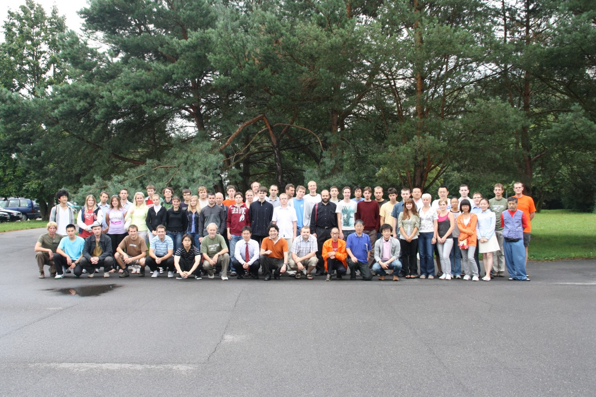

与中村茂聊天
#1 与中村茂聊天 作者：舍露里 发表时间：2009-8-15 2:14:17
在8月13号，世锦赛闭幕式之后的party上，我们正好与日本棋手们坐邻桌吃饭。
想和中村聊天的愿望积蓄已久的大鱼和曹冬抓来了正四处活跃着的冈部宽，并迅速抢占有利地形——带着我围坐在中村和冈部边上。
通过我的中——英，冈部的英——日；再通过冈部的日——英，我的英——中，他们终于如愿以偿。
整个过程中，中村都笑得像朵花——花枝乱颤。
而可怜的冈部，总在刚举杯想喝口酒，或者拿刀想吃块肉时，被我温柔的一声“Okabe sa:n”所打断，然后条件反射般地放好双臂注视着我。当然我不会忘记体贴地安慰一句：“对不起，打扰您吃饭了。”
［ 无尽 于 2009-8-15 7:14:40 时奖励此帖[金币加 40 威望加2］
好帖子！第一手珍贵的报道
［ 方圆之外 于 2009-8-15 11:26:55 时花20金币送鲜花一朵］
#2 Re:与中村茂聊天 作者：舍露里 发表时间：2009-8-15 2:19:28
大鱼和曹冬的目的主要是想表达对中村的尊敬和感谢之情。
大鱼说：“我刚开始下棋的时候，研究了中村的每一盘棋，我是通过打他的谱来学习五子棋的，他可以说是我的半个老师。”
曹冬说：“我也是，我也是，我也研究过他的每一盘棋……”
大鱼打断他：“我和你不一样，你好歹有个老师，我是没有老师的，中村算是我的老师。”
曹冬：“……”
等冈部宽翻译完，大鱼拿起了酒杯敬了中村，中村乐呵呵地喝了一口。随即曹冬也拿起酒杯敬酒，中村又喝了一口。
中村咧着嘴指着大鱼说：“他都把我研究透了，我能不输给他吗？”
然后转头又问曹冬：“那你怎么没赢我那？”
曹冬：“……”
#3 Re:与中村茂聊天 作者：团子亲卫队 发表时间：2009-8-15 2:20:50
曹冬真可怜…… 另外很想了解一下，中村对大鱼时走的那个5到底是啥意思？和传统二打差一路。
另外很想了解一下，中村对大鱼时走的那个5到底是啥意思？和传统二打差一路。
#4 Re:与中村茂聊天 作者：舍露里 发表时间：2009-8-15 2:27:22
大鱼和曹冬问：“通过这次比赛，你觉得各国棋手有哪些不同的风格？”
中村很谦虚地说：“这次比赛采用的是山口规则，在这新规则下，我就像个初学者，而其他的棋手在我眼中都是高手。”
大鱼：“哦。”然后无辜地看着我，“那他还是没回答我的问题啊。”
冈部继续翻译：“至于风格，中村认为亚洲棋手更接近日本，比如中国（特指中国大陆——笔者注）和台湾的风格就比较像日本。” 冈部用手比划着：“ 比如说欧洲在这一端，日本在那一端，中国和台湾就在靠近日本的那一端。”
大鱼如醍醐灌顶，很感慨地跟曹冬说：“他说得是，的确是比较偏向日本的风格。”
曹冬问我：“中村是说中国在中间吗？”
我：“不是……是在靠右的位置……”
#5 Re:Re:与中村茂聊天 作者：舍露里 发表时间：2009-8-15 2:29:10
引用：好问题！
原文由 团子亲卫队 发表于 2009-8-15 2:20:50 :
曹冬真可怜……
#6 Re:与中村茂聊天 作者：舍露里 发表时间：2009-8-15 2:40:50
大鱼和曹冬又问：“大家一直都很期待你的复出，尤其在中国，好多棋手都希望有机会能向你请教几盘，你将来还会继续参加其他大赛吗？”
冈部：“中村今年49了，马上就50了，过一周就是他的50生日了……”
我立刻举起我的美年达杯：“お誕生日おめでとうございます！”中村开心地喝了一大口。我赶紧翻译给大鱼和曹冬，他们也马上相继敬了中村，于是中村又喝了两大口。（真想灌醉他）
冈部继续翻译道：“中村很久没下棋了，最近五六年才开始在日本打比赛，他一直希望日本有棋手能打败他，比如他一直很希望我能打败他，但是我打不败他，日本也没人能打败他，所以他又出来比赛了。以后还会参加什么比赛要看他的工作而定。不过能确定的是他会参加世团赛。”
很关键的问题：“那他打几台？”
冈部：“一台是日本的名人打的，所以中村打不了一台，但是他会打二台。”
大鱼：“哇，那我要打二台。”
曹冬：“我也要打二台……”
大鱼：“别跟我抢，你去打一台，给你个机会去虐XXXX”
曹冬：“……”
#7 Re:与中村茂聊天 作者：ahaqcx 发表时间：2009-8-15 2:47:34
 好精彩，听故事看小说，期待一直续下去
好精彩，听故事看小说，期待一直续下去
#8 Re:与中村茂聊天 作者：舍露里 发表时间：2009-8-15 3:04:48
大鱼说中村应该比较喜欢下白棋，就问他是偏好执黑还是执白。
中村还是很谦虚：“我现在年纪大了，下黑下白都很弱。不过在我年轻的时候我比较喜欢下黑棋。”
“在你心目中，一个棋手在比赛中，最重要的能力是什么呢？”
这个问题中村想了很久，回答说：“攻击速度！”
大鱼和曹冬想了一下，不太理解，就请中村详细解释一下。
可能是比较需要意会，冈部宽搔着脑袋娓娓向我解释，但仍然很抽象：“攻击速度离不开之前的经验。中村下棋的时候，脑海里就会浮现出以前下过的局面，以前的那些棋对他实战中的攻击速度起着至关重要的作用。”
大鱼小小地长考了一会儿，顿悟：“他说的就是通过经验累积的对棋型的理解吧！比如经验多了，看到一个棋型就会察觉到有没有杀的机会。”
#9 Re:Re:与中村茂聊天 作者：团子亲卫队 发表时间：2009-8-15 3:14:59
引用：
原文由 舍露里 发表于 2009-8-15 2:40:50 :大鱼和曹冬又问：“大家一直都很期待你的复出，尤其在中国，好多棋手都希望有机会能向你请教几盘，你将来还会继续参加其他大赛吗？”
冈部：“中村今年49了，马上就50了，过一周就是他的50生日了……”
我立刻举起我的美年达杯：“お誕生日おめでとうございます！”中村开心地喝了一大口。我赶紧翻译给大鱼和曹冬，他们也马上相继敬了中村，于是中村又喝了两大口。（真想灌醉他）
冈部继续翻译道：“中村很久没下棋了，最近五六年才开始在日本打比赛，他一直希望日本有棋手能打败他，比如他一直很希望我能打败他，但是我打不败他，日本也没人能打败他，所以他又出来比赛了。以后还会参加什么比赛要看他的工作而定。不过能确定的是他会参加世团赛。”
很关键的问题：“那他打几台？”
冈部：“一台是日本的名人打的，所以中村打不了一台，但是他会打二台。”
大鱼：“哇，那我要打二台。”
曹冬：“我也要打二台……”
大鱼：“别跟我抢，你去打一台，给你个机会去虐XXXX”
曹冬：“……”
太好啦~ 世团赛又能见到中村啦~ 
明年的名人么，我猜还是长谷川一人……
另外中村的生日是8月几号呢？
#10 Re:与中村茂聊天 作者：舍露里 发表时间：2009-8-15 3:41:23
我打算去找来冈部的邮箱继续抓着他问……#11 Re:与中村茂聊天 作者：ahaqcx 发表时间：2009-8-15 4:18:32
连载的有点慢啊
#12 Re:与中村茂聊天 作者：舍露里 发表时间：2009-8-15 4:24:34
规则问题，人人关心
大鱼和曹冬问：“在你心目中，哪个规则最完美，或者说你设想的完美的规则是怎样的？”
冈部翻译并解释：“目前日本没在研究开局规则，而在研究结局规则，是中村在20年前就建议过的规则。黑白双方都有PASS权，如果这盘棋最后是和棋的话，先提出PASS的那一方算赢，或者算比较高的分。比如赢一盘是3分，输一盘是0分，和棋的时候先提出PASS的那一方得2分。当然我们并不是说这是完美的规则，这只是我们在设想的规则。”
大鱼听了之后有点疑惑：“那不是对白方有利了，因为黑棋会有禁手。” 冈部说：“如果黑棋一开始就察觉到没有赢的机会的话，可以一早就提PASS。” 由于规则问题太深奥、太复杂，所以没有当场深究下去。
又问了冈部和中村对SAKATA规则的看法
冈部说：“SAKATA规则是日本在3、40年前就提出来的，然而在当时的一些比赛中试行后发现，黑棋的优势太大了。由于前三手全由一方摆，那么先手方就很容易把局面导入自己的研究内。所以之后我们再也不提议SAKATA规则了。”
#13 Re:Re:与中村茂聊天 作者：舍露里 发表时间：2009-8-15 4:26:00
引用：
原文由 ahaqcx 发表于 2009-8-15 4:18:32 :
刚从捷克回到英国，好困啊
#14 Re:与中村茂聊天 作者：舍露里 发表时间：2009-8-15 4:34:25
昨天晚上问的问题，今天早上两位提问者已经想不起问的什么了
辟个谣：
国内盛传某日本高手是中村的学生（河村？我忘了。。。大家猜），于是他们问了中村这个问题，中村连连摆手：“NO NO NO ”
由于今天要早起，所以我们意犹未尽地要告别了。准备离开的时候找不到中村，估计又被谁拉去喝酒了。于是我们匆匆抓住冈部宽，让他转达大鱼想跟中村说的话：“我一直很尊敬中村，能和中村下棋是我的荣幸，希望以后还能有机会和他下棋。”
冈部宽很深情地对大鱼说：“中村不下棋已经很久，最近五、六年在日本国内复出下棋，只输过三次——我和饭尾，但都是拿白输的，这是他唯一一次拿黑输棋，所以他很佩服吴镝的实力，也希望以后再和吴镝切磋。”
#15 Re:与中村茂聊天 作者：舍露里 发表时间：2009-8-15 4:49:23
暂时就想起这些问题了，别的等两位当事人再来补充。
从没想过一代连珠之神竟然如此谦虚，如此平易近人。从我看到他的第一天，他就一直是笑咪咪的。在赛场里和别人打照面时，即使我对别人微笑，对方也大都目光游离，不作出回应，唯独中村，只要和他目光接触到，他总会笑呵呵地和我打招呼。
QT的那几天，他就孤独地在赛场里走着，看看比赛，看看场外的摆棋，尽管语言不通，但始终保持着他的笑容。但凡有人找他拍照、签名，他更是乐呵呵的，一点也没有“名人”的架子。如果不是大鱼和曹冬告诉我他就是中村，我怎么也无法把他和那个 “神”联系起来。
我不懂棋，但对我来说，光是这些，就已经够我尊敬他了。
#16 Re:Re:Re:与中村茂聊天 作者：舍露里 发表时间：2009-8-15 4:53:33
引用：不是明年的名人，是已经比出来的名人，大家猜 ……
原文由 团子亲卫队 发表于 2009-8-15 3:14:59 :引用：
原文由 舍露里 发表于 2009-8-15 2:40:50 :大鱼和曹冬又问：“大家一直都很期待你的复出，尤其在中国，好多棋手都希望有机会能向你请教几盘，你将来还会继续参加其他大赛吗？”
冈部：“中村今年49了，马上就50了，过一周就是他的50生日了……”
我立刻举起我的美年达杯：“お誕生日おめでとうございます！”中村开心地喝了一大口。我赶紧翻译给大鱼和曹冬，他们也马上相继敬了中村，于是中村又喝了两大口。（真想灌醉他）
冈部继续翻译道：“中村很久没下棋了，最近五六年才开始在日本打比赛，他一直希望日本有棋手能打败他，比如他一直很希望我能打败他，但是我打不败他，日本也没人能打败他，所以他又出来比赛了。以后还会参加什么比赛要看他的工作而定。不过能确定的是他会参加世团赛。”
很关键的问题：“那他打几台？”
冈部：“一台是日本的名人打的，所以中村打不了一台，但是他会打二台。”
大鱼：“哇，那我要打二台。”
曹冬：“我也要打二台……”
大鱼：“别跟我抢，你去打一台，给你个机会去虐XXXX”
曹冬：“……”
太好啦~ 世团赛又能见到中村啦~
明年的名人么，我猜还是长谷川一人……
另外中村的生日是8月几号呢？
#17 Re:与中村茂聊天 作者：ahaqcx 发表时间：2009-8-15 5:12:14
 在连珠世界里有几件有关中村茂的传闻，他有8年多的时间没有参加日本以外的连珠比赛，而且他不上网。因此有关他的信息非常稀少，他的身上笼罩着一层神秘的色彩。《连珠世界杂志》对他进行的最近一次采访是在1989年，而现在读者们可以对中村茂又多一点了解了。他今年有40岁（1999年），目前的工作是管理一家装潢材料商店（或者仓库 warehouse）。
在连珠世界里有几件有关中村茂的传闻，他有8年多的时间没有参加日本以外的连珠比赛，而且他不上网。因此有关他的信息非常稀少，他的身上笼罩着一层神秘的色彩。《连珠世界杂志》对他进行的最近一次采访是在1989年，而现在读者们可以对中村茂又多一点了解了。他今年有40岁（1999年），目前的工作是管理一家装潢材料商店（或者仓库 warehouse）。
《连珠世界杂志》记者对中村茂的采访最初发生在1999年的11月13日，也就是中村茂vs安东世纪之战的前夜。我们问他对这场比赛的期待，他说他想得到满意的对局。我们的采访是在酒吧里，中村茂几杯啤酒下肚，情绪高涨起来，向我们敞开了心扉。采访的翻译是Koji Hayakawa，但不久之后中村也开始说英文。我们了解到，中村在参加完1991年莫斯科世锦赛之后，失去了tie-推销员的工作，而时间的缺乏更是让他不能经常参加连珠比赛。70年前在日本曾经有过职业连珠棋手，但是现在日本的连珠状况相当凄凉。“期待中国，而不是日本”，中村茂说。我们想知道中村茂对卡尔森在1999年世锦赛的成功有何看法，他说，原因要不在于他这些年极其快速的进步，要不就仅仅是运气。
我们也谈到了1989年Peter Jonsson的那次采访，即Peter当时问到的一个问题：如果1989年世锦赛可以有10位日本棋手参加，而不仅仅是4位，那么最好的欧洲棋手将获得第几名？答案是第11名。Peter说当时中村边回答边哈哈大笑，给他的印象是他并非是此意。但这一次，中村予以确认，他当时确实是那意思。好了，现在我们将带给你我们的中村采访录，完成于世纪之战的几天之后，由Koji Hayakawa译为英文。
问：你在哪家连珠俱乐部下棋？现在下棋的频率如何，是如何进行训练的？你经常一个人练棋吗，你的训练大约是什么样子？
答：我曾经在城西连珠俱乐部和浅草连珠俱乐部下棋。但最近我已经不在那里下了。因此我现在并不经常下棋。我通常是一个人学习连珠，一般是复习旧的理论，并从中找寻新思路。有时，我会跟我的连珠朋友们下棋，但这仅仅是在我去“hot spar”酒吧的时候。
问：现在你看起来很少参加比赛，你一般会参加什么比赛呢？
答：我总会参加三个赛事：名人赛、关东公开赛和Keima锦标赛。在春季我会去滨松市参加一些赛事。因此我认为对我而言，这已经足够了。
问：你看起来工作非常繁忙，有考虑过更换一份新工作吗？
答：我并不认为我特别忙碌，当然我不能够享有足够的假期，这是事实。我一年仅有三次额外的假期，纵然如此，我也要比我同事为多。在日本，即使是特殊工种的人（如相乐俊）在一家公司里也不可能享有很多的假期。因此一般公司不会雇佣像我这样的人。
问：你会参加京都世锦赛吗？将来呢？
答：我不参加第七届京都世锦赛，但这并不意外着将来我也不会参加。
问：你为这场世纪之战准备好了吗？
答：我已经为这个赛季做了一些研究，但这不仅仅是针对安东先生，我还未发现有效的招数。
问：你认为安东取得成功的原因是什么？你想复仇吗？
答：他在第一场比赛里展现出来的战斗精神令我非常吃惊，他看起来就像一名猎手。我不想再与他进行更多的比赛，但若有某些仪式的安排，我们会再次交手。恩，我有个好主意，下次交手应该安排在连珠200周年庆的日子里。
问：连珠对你来说意味着什么？有想过放弃吗？
答：当然在我年轻的时候，连珠对我别有含义，但是现在我是快乐而为。我会不间断的下棋。
问：除了连珠，你还有别的爱好吗？
答：当然，我有别的爱好。麻将、唱歌、赛马等等。但我的最爱是光顾“hot spar”酒吧。
问：你怎样看待连珠在日本的将来？
答：我对日本的将来没有一点看法，这是一个很难的问题。
问：除了参加比赛，你有计划为连珠做点什么事情，比如培训、组织？
答：我已经对此做了一些计划，现在我正尝试让退出的棋手重新回来。
问：你抽烟的习惯有多久了？
答：已经超过20年了。
问：你看起来很喜欢喝啤酒，酒量如何？
答：是的，我喜欢喝啤酒，在家里我可以喝1～1.5升，在“hot spar”酒吧喝的更多。
问：你喜欢什么类型的音乐？
&nb
#18 Re:与中村茂聊天 作者：ahaqcx 发表时间：2009-8-15 5:17:58
一直在想为什么我国的那些连珠前辈一个个的都选择隐退。。好象没见几个40+的前辈了打比赛了。。
看看围棋连珠或许有点可悲，BC卡杯 3亿韩元（约160万人民币）
三星杯 2亿韩元
LG杯 2．5亿韩元
富士通杯 1500万日元 （约105万）
丰田杯 3000万日元 （约210万）另加一部车 ，两年一届
应氏杯 40万美元 （约280万） ，四年一届
春兰杯 15万美元 （约105万），两年一届
农辛杯 2亿韩元（只有冠军队才有奖金）
亚洲电视快棋赛 250万日元
中国（当然都是人民币）：
烂柯山杯 50万
倡棋杯 40万
天元战 10万
名人战 10万
阿含桐山杯 20万
NEC 20万 今年停办
招商银行杯 15万
龙星战 8万
西南王 5万
新人王 3千
建桥女子赛 10万
#19 Re:与中村茂聊天 作者：小丸.net 发表时间：2009-8-15 6:41:22
舍露里小姐,我有OKABE(冈部宽)的MSN,你要不要.拿你在捷克的独家照片跟我换!
冈部宽的英文很不错的,前段时间他刚刚找到工作,所以非常的忙,以至于分不出时间来中国打上海名人战,这一点是非常遗憾的.不过他说,只要一有时候,就会来中国,他对中国的棋手非常的敬佩,不光是从水平上.
#20 Re:与中村茂聊天 作者：流逝的旋律 发表时间：2009-8-15 7:27:13
 膜拜中村老师
膜拜中村老师［ 无尽 于 2009-8-15 7:30:26 时奖励此帖[金币加 20 威望加1］0+1
#21 Re:与中村茂聊天 作者：流逝的旋律 发表时间：2009-8-15 7:27:50
倒 用错了号#22 Re:与中村茂聊天 作者：水月 发表时间：2009-8-15 8:33:17
Okabe的邮箱我好像有的还有博客，电话。。。。
那张名片我找找～
#23 Re:Re:与中村茂聊天 作者：团子亲卫队 发表时间：2009-8-15 10:04:44
引用：无尽：
1、有个翻译理解的问题，欧洲的theory（直译理论）翻译过来中文应该是“定式”，而不是中文意义中的理论：）
我怎么觉得“定式”应该翻译成是opening？theory还是理论吧
#24 Re:Re:与中村茂聊天 作者：纳米 发表时间：2009-8-15 10:20:54
引用：
原文由 ahaqcx 发表于 2009-8-15 5:12:14 :恩，我有个好主意，下次交手应该安排在连珠200周年庆的日子里。
请问这是什么时候？
#25 Re:与中村茂聊天 作者：aabb 发表时间：2009-8-15 10:25:35
我也觉得迂回战术比直接进攻更先进。。
#26 Re:与中村茂聊天 作者：水月 发表时间：2009-8-15 10:28:51
200周年？99年的时候好像是100周年。。。再等90年吧。#27 Re:与中村茂聊天 作者：aabb 发表时间：2009-8-15 10:32:16
ANDO怎么还不出来啊。。下次围攻ANDO。。
#28 Re:与中村茂聊天 作者：周光乐 发表时间：2009-8-15 11:13:01
砍了无敌，为中村报酬#29 Re:与中村茂聊天 作者：水月 发表时间：2009-8-15 11:24:51
话说，冈部和贺茂雪都很帅#30 Re:与中村茂聊天 作者：百医天使 发表时间：2009-8-15 11:43:05
鱼：“别跟我抢，你去打一台，给你个机会去虐XXXX?
我想了想，刚好四个字，苏切科夫，是这个意思吗？
#31 Re:与中村茂聊天 作者：水月 发表时间：2009-8-15 12:04:12
估计不是。。。是名人吧。。。长谷川～#32 Re:与中村茂聊天 作者：没事摆石子玩 发表时间：2009-8-15 12:40:52
中村是永远的名人,世界团体赛的时候在位名人一定很尴尬. 大鱼 曹冬 也许还有ANDO都冲2台去了
#33 Re:与中村茂聊天 作者：沈毅 发表时间：2009-8-15 12:53:36
 中村很年轻啊，才不到50
中村很年轻啊，才不到50
#34 Re:与中村茂聊天 作者：水月 发表时间：2009-8-15 12:58:24
相对于沈毅来说，三森也很年轻#35 Re:与中村茂聊天 作者：纳米 发表时间：2009-8-15 13:09:01
沈毅可是退出棋坛的人物
#36 Re:Re:与中村茂聊天 作者：团子亲卫队 发表时间：2009-8-15 14:19:38
引用：联系上下文似乎XXXX是指某位4字的日本名人，但长古川是3个字或5个字，没准是山口釉水？鱼：“别跟我抢，你去打一台，给你个机会去虐XXXX?
我想了想，刚好四个字，苏切科夫，是这个意思吗？
估计不是。。。是名人吧。。。长谷川～
#37 Re:与中村茂聊天 作者：水月 发表时间：2009-8-15 14:22:22
额。。。您确定那个XXXX是精确的每个X对应一个字么？#38 Re:与中村茂聊天 作者：舍露里 发表时间：2009-8-15 15:15:12
那个XXXX是我瞎掰的，因为我忘了名字了，字数不限，大家可以继续猜……
#39 Re:Re:与中村茂聊天 作者：菜包先生 发表时间：2009-8-15 15:24:46
整个过程中，中村都笑得像朵花——花枝乱颤。
明子太有才了。。。。
#40 Re:与中村茂聊天 作者：水月 发表时间：2009-8-15 15:32:00
非常希望再多几张照片～#41 Re:与中村茂聊天 作者：舍露里 发表时间：2009-8-15 15:40:30
那个theory应该是翻译成定式
ANDRY在聊天时把这个"th"发成了'd'的音，害得我怎么也听不出是什么，不过他解释后我知道是定式了，然后一还原，他说的就是"theory"
另外昨天看连珠杂志上安度的文章，文中也出来了"theory"这词，联系上下文，也是定式的意思
#42 Re:与中村茂聊天 作者：瞻彼淇奥 发表时间：2009-8-15 16:31:08
要是我会日语就好了。。5555#43 Re:与中村茂聊天 作者：雅匪 发表时间：2009-8-15 17:30:16
堪称09年五子连珠界最珍贵的一次聊天！
：）转载至西北狼棋社论坛.说星谝月版块http://xblqs.uueasy.com/read.php?tid-1358-page-e.html#a，有不妥望告知。
#44 Re:与中村茂聊天 作者：忧郁的双眼 发表时间：2009-8-15 17:36:09
支持雅匪
与中村聊天太幸福啦
不知道能邀请名人来上海比赛交流不
#45 Re:Re:与中村茂聊天 作者：失落刀 发表时间：2009-8-15 17:41:48
引用：
原文由 忧郁的双眼 发表于 2009-8-15 17:36:09 :支持雅匪
与中村聊天太幸福啦
不知道能邀请名人来上海比赛交流不
#46 Re:与中村茂聊天 作者：忧郁的双眼 发表时间：2009-8-15 17:53:40
失落教主为啥引用我的话#47 Re:与中村茂聊天 作者：失落刀 发表时间：2009-8-15 18:26:44
与我心有切切焉。#48 Re:与中村茂聊天 作者：索非亚 发表时间：2009-8-15 18:43:38
再次目睹神的风采
#49 Re:与中村茂聊天 作者：舍露里 发表时间：2009-8-15 19:10:52
发张大合照
MS要下载后才能看到另一半。。。。

［ 水月 于 2009-8-15 19:40:19 时花20金币送鲜花一朵］
［ 有志青年 于 2009-8-15 20:27:46 时奖励此帖[金币加 20 威望加1］
#50 Re:与中村茂聊天 作者：慕容晓文 发表时间：2009-8-15 21:33:45
看到全图不需要下载，只要用鼠标拖图片就行了，会弹出一个新窗口，可以看到另一半
#51 Re:与中村茂聊天 作者：孤竹 发表时间：2009-8-15 21:39:28
舍露里（贺加贝MM）
#52 Re:Re:与中村茂聊天 作者：舍露里 发表时间：2009-8-15 22:47:15
引用：这就是智商上的差距
原文由 慕容晓文 发表于 2009-8-15 21:33:45 :看到全图不需要下载，只要用鼠标拖图片就行了，会弹出一个新窗口，可以看到另一半

#53 Re:与中村茂聊天 作者：慕容晓文 发表时间：2009-8-15 23:33:09
楼上的94贺加贝？
真是孤陋寡闻啊……
#54 Re:与中村茂聊天 作者：舍露里 发表时间：2009-8-15 23:45:17
我本来就是个无名小卒
#55 Re:与中村茂聊天 作者：水月 发表时间：2009-8-16 1:53:08
啥也别说了，发自己的照片吧～#56 Re:Re:与中村茂聊天 作者：舍露里 发表时间：2009-8-16 2:36:36
引用：
原文由 水月 发表于 2009-8-16 1:53:08 :
啥也别说了，发自己的照片吧～
大合照里第二排右数第二个
#57 Re:与中村茂聊天 作者：舍露里 发表时间：2009-8-16 3:19:38
最新小道消息：ANTS告诉我，不久他将对中村进行次采访，到时会把第一手资料发给我。
大家有什么想问的问题就发出来，我可以建议ANTS在采访的时候问上
#58 Re:与中村茂聊天 作者：dyccj 发表时间：2009-8-16 10:16:56
不知道中村大师有子嗣否，子嗣连珠否？#59 Re:与中村茂聊天 作者：舍露里 发表时间：2009-8-16 10:42:09
想起来了，
我要辟的谣就是河村典彦
他不是中村的弟子
#60 Re:与中村茂聊天 作者：越狱行辕 发表时间：2009-8-16 12:01:25
太假了 都说是 杂就不是了内？
#61 Re:与中村茂聊天 作者：日出333 发表时间：2009-8-16 13:01:03
很有意思啊。。。
楼主文采生动
#62 Re:Re:与中村茂聊天 作者：极地剑客 发表时间：2009-8-16 13:43:38
平易近人.....:)#63 Re:Re:与中村茂聊天 作者：舍露里 发表时间：2009-8-16 17:06:47
引用：中村亲口说不是的～
原文由 越狱行辕 发表于 2009-8-16 12:01:25 :
#64 Re:与中村茂聊天 作者：流星叔叔 发表时间：2009-8-16 19:08:40
 ，小Y头很有灵气哈，照片里
，小Y头很有灵气哈，照片里
辛苦了，这次，羡慕哈，近距离接触神！
#65 Re:Re:与中村茂聊天 作者：慕容晓文 发表时间：2009-8-17 0:59:10
引用：
原文由 舍露里 发表于 2009-8-15 23:45:17 :
谁说的……大家都知道~~~~美女啊~~~
#66 Re:与中村茂聊天 作者：佛心诚 发表时间：2009-8-17 5:03:38
写的好,真的很佩服这样一个人.我还在为最后的2次失败感到可惜,50岁的人了可能是精力的问题吧.看他下的棋感觉很深刻.年轻点那该有多好...同时感谢带来最新报道#67 Re:与中村茂聊天 作者：棋界虎哥 发表时间：2009-8-17 10:26:48
其实中村的徒弟是小野孝之#68 Re:与中村茂聊天 作者：王颢霖 发表时间：2009-8-17 15:17:37
贺加贝美眉是不是在大不列颠及北爱尔兰联合王国就学啊？另外你旁边的是呼吸吧？#69 Re:与中村茂聊天 作者：慕容晓文 发表时间：2009-8-17 18:07:45
楼上的，你真有才啊~~~竟然知道英国的全称啊
#70 Re:与中村茂聊天 作者：舍露里 发表时间：2009-8-17 21:01:21
我边上的是小姚，小姚的边上是胡夕
另外感想同楼上
#71 Re:与中村茂聊天 作者：极地剑客 发表时间：2009-8-19 7:39:52
期待楼上MM地PP~#72 Re:与中村茂聊天 作者：纳米 发表时间：2009-8-19 9:44:21
中村啥时候访华#73 Re:与中村茂聊天 作者：水月 发表时间：2009-8-19 13:03:56
中村要是访华，我就去买把好扇子，去要签名～
#74 Re:与中村茂聊天 作者：小丸.net 发表时间：2009-8-19 13:14:33
还不如你去访日呢.
#75 中村茂的生日 作者：舍露里 发表时间：2009-8-24 5:49:16
8月22号！
#76 Re:与中村茂聊天 作者：慕容晓文 发表时间：2009-8-24 9:11:35
是哦……